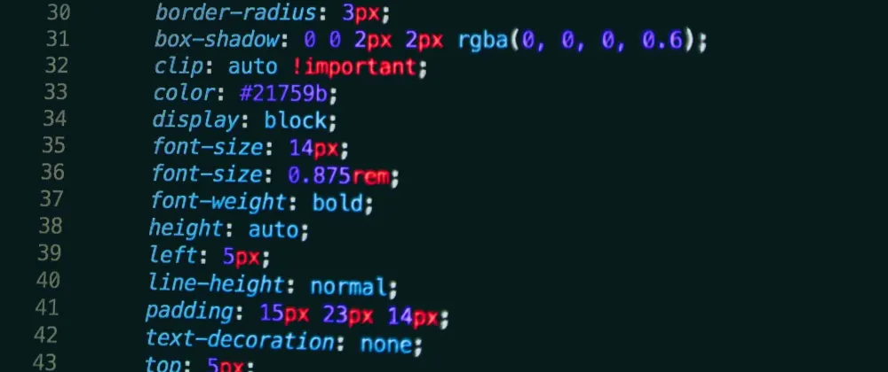
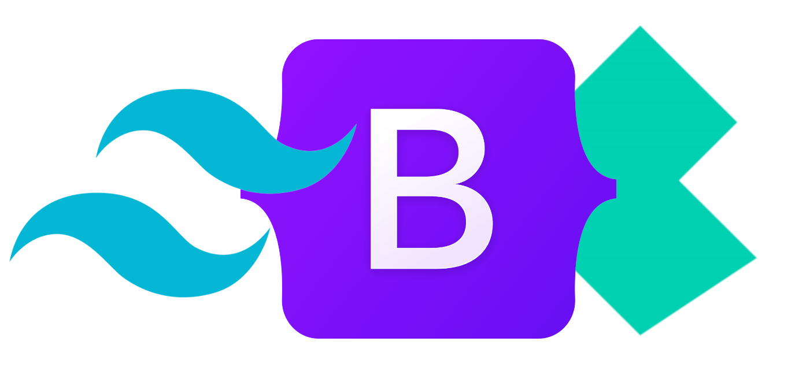

MOŻLIWOŚCI
Kaskadowe arkusze stylów to lista dyrektyw ustalających w jaki sposób poszczególne elementy na stronie mają zostać wyświetlone. Pozwala na opis rezczy takich jak rodzina czcionek, kolor tekstu, marginesy, czy nawet pozycja danego elementu względem innych. CSS został stworzony w celu odseparowania struktury dokumentu (informacji zapisanych w HTML) od formy jego prezentacji. Podział ten zwiększa zakres dostępności witryny, zmniejsza zawiłość dokumentu, a także ułatwia wprowadzanie zmian w strukturze dokumentu.


FRAMEWORKI
Frameworki CSS to specjalnie stworzone biblioteki, których zadaniem jest ułatwienie definicji stylu dla stron internetowych z wykorzystaniem kaskadowych arkuszy stylów. Przykładami takich bibliotek mogą być Bootstrap, który zawiera zestaw przydatnych narzędzi znacznie ułatwiającyh tworzenie interfejsu graficznego stron, albo Tailwind, analizujący wykorzystane klasy w strukturze HTML i na ich podstawie kompilujący style, które będą załączone na stronie. Frameworki są zazwyczaj dołączane jako zewnętrzne pliki.